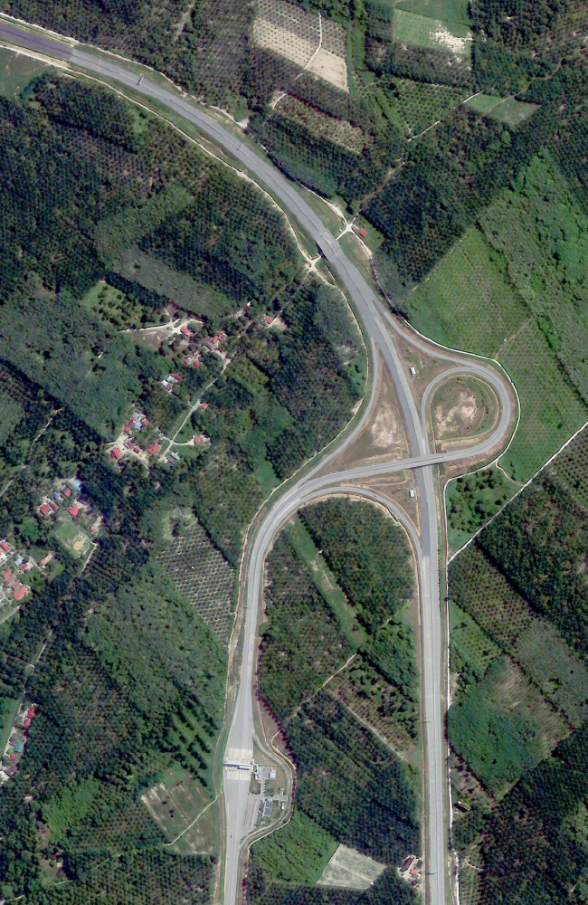
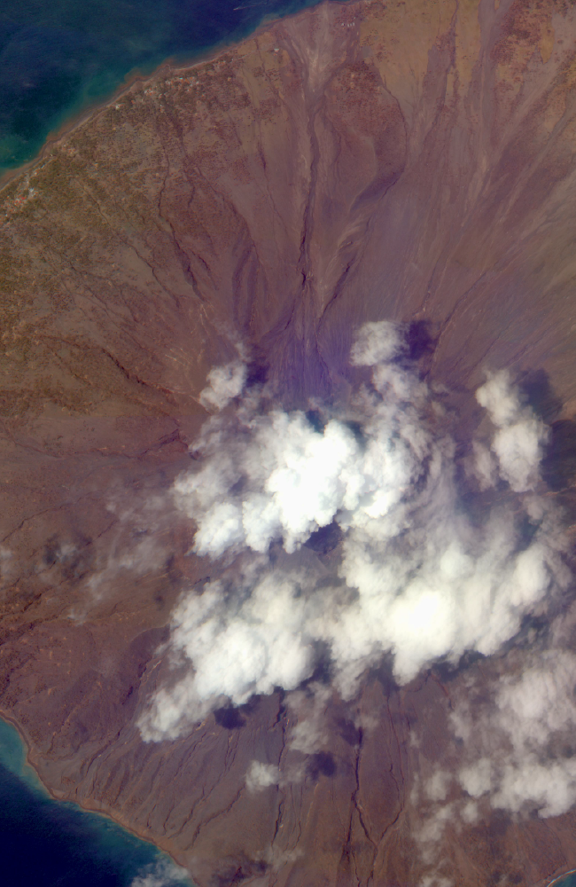
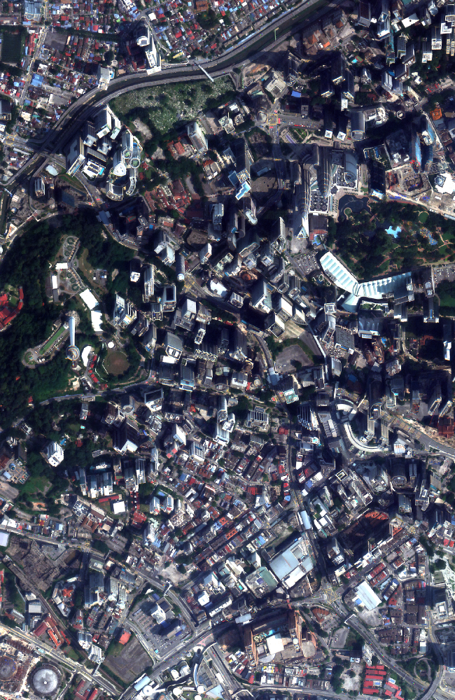
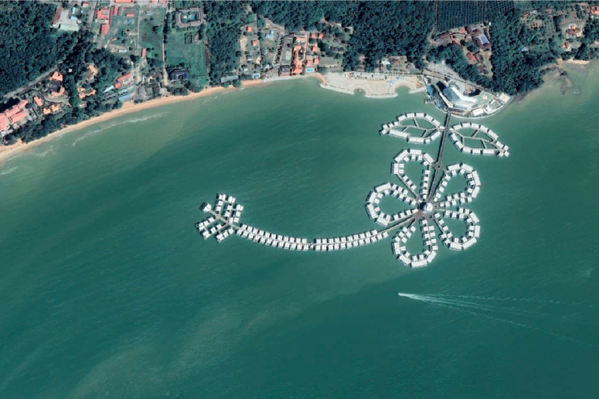
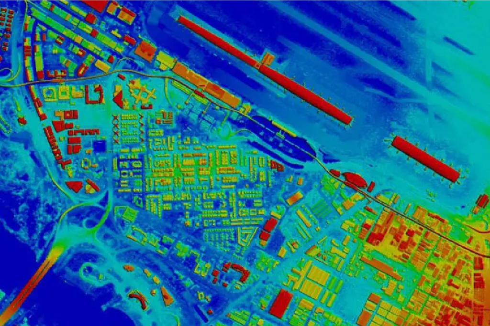
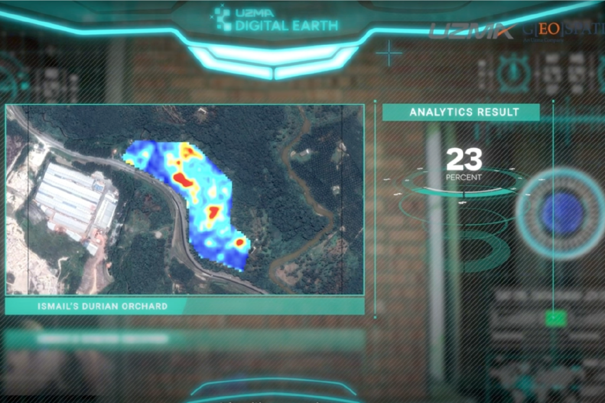
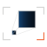
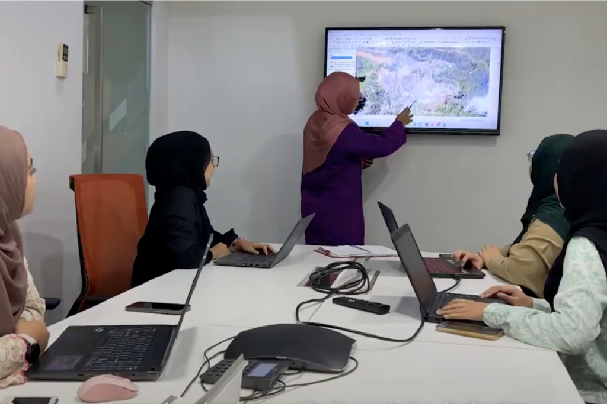

OUR SERVICES
High-Value Services Across Industries
Each of our services is crafted to provide industries with precise, data-driven insights, enabling smarter decision-making and boosting operational efficiency.




High Resolution Satellite Imagery
See the Earth like never before with Geospatial AI’s high-resolution satellite imagery.
Learn moreMapping & Analytics
Unlock the power of geospatial data wth Geospatial AI’s advanced mapping and analytics services.
Learn more


AI Platform Development
Unlock the full potential of your geospatial data with Geospatial AI’s advanced platform development services.
Learn moreTraining & Consultation
Empower your team with the skills and knowledge to harness the power of geospatial technology through our comprehensive training and consultation services.
Learn more
“This business is a very nascent technology in Malaysia. It is costly, it is risky. Why people still wanna do it?
The only answer for that is because, if you get it right, it can be rewarding.”
- Dato' Kamarul R. Muhamed
Group CEO, Uzma Berhad
Frequently Asked Questions
This section addresses common questions to help you better understand our services and capabilities. Explore the topics below to learn how our technology works, what sets us apart, and how we can support your specific goals with geospatial data.
If your question isn’t answered here, reach out to us at geospatial.ai@uzmagroup.com for personalized assistance.
UzmaSAT-1, EO Satellite
What is Earth Observation (EO), and how do EO satellites work?Earth Observation (EO) involves using satellites to monitor and gather data about the Earth’s surface, climate, oceans, and atmosphere. EO satellites capture high-resolution images and data across multiple wavelengths, which are then analyzed to provide valuable insights for industries like agriculture, environmental monitoring, urban planning, and maritime security. By continuously orbiting the Earth, EO satellites offer near real-time data to help make informed decisions.
What is UzmaSAT-1, and what are its main objectives?UzmaSAT-1 is Uzma Group’s dedicated Earth Observation satellite designed to provide high-resolution imagery and geospatial data. Its primary objectives are to support industries with precise data on environmental conditions, resource management, urban development, and more. The satellite plays a crucial role in enabling data-driven decision-making for a variety of applications, from natural resource monitoring to sustainable urban planning.
How will UzmaSAT-1 benefit industries and the environment?UzmaSAT-1 provides high-quality data that empowers industries to operate more efficiently and sustainably. For instance, it enables precision agriculture, accurate environmental monitoring, and better planning for infrastructure and resources. With UzmaSAT-1, organizations can proactively address challenges related to climate change, deforestation, marine protection, and urban expansion, promoting a balanced approach to development and conservation.
What types of data will UzmaSAT-1 capture, and how is it used?UzmaSAT-1 captures high-resolution multispectral and thermal imagery, offering detailed insights into land, water, and atmospheric conditions. This data can be used for various applications, such as monitoring vegetation health, assessing water quality, tracking urban growth, and detecting illegal maritime activities. The data is processed and analyzed to support decision-making and optimize operations across multiple sectors.
How can organizations access UzmaSAT-1 data and services?Organizations can access UzmaSAT-1 data through the Uzma Digital Earth platform, which offers a range of geospatial data and analysis services. Our team also provides customized data solutions, consultations, and ongoing support to ensure clients maximize the benefits of satellite imagery and geospatial analytics.
Services & Solutions
What is Uzma Digital Earth, and how does it work with UzmaSAT-1?Uzma Digital Earth is a comprehensive geospatial platform designed to deliver satellite data, analytics, and insights. It integrates data from UzmaSAT-1 and other sources to offer a full suite of services, such as mapping, monitoring, and predictive analysis. Uzma Digital Earth allows industries to access actionable intelligence, making it easy to harness satellite data for strategic planning and operational efficiency.
What industries can benefit from the applications of Uzma Digital Earth?Uzma Digital Earth serve a wide range of industries, including oil and gas, agriculture, environmental conservation, urban planning, and maritime security. These services provide data-driven insights that help organizations manage resources, optimize operations, and comply with environmental regulations.
What types of data can Uzma Digital Earth provide?UzmaSAT-1 provides high-resolution multispectral and thermal imagery, capturing detailed information on vegetation, land cover, water bodies, and atmospheric conditions. Uzma Digital Earth processes this data to deliver specific insights, such as vegetation health indices, heat mapping, and resource tracking, tailored to industry needs.
How can Uzma Digital Earth support compliance with the EU Deforestation Regulation (EUDR)?Uzma Digital Earth provides powerful tools for monitoring deforestation, land-use change, and environmental impacts, making it an ideal resource for companies needing to comply with the EU Deforestation Regulation (EUDR). By using high-resolution satellite imagery and geospatial analysis, Uzma Digital Earth can track and report land conditions, ensuring that supply chains avoid products linked to deforestation. This level of monitoring helps companies demonstrate due diligence, meet EUDR requirements, and promote sustainable sourcing practices.
How can I get started with Uzma Digital Earth services?To get started, reach out to us at geospatial.ai@uzmagroup.com. Our team will provide a consultation to discuss your goals and recommend a tailored solution to fit your industry needs. We’ll work with you to ensure you can fully leverage UzmaSAT-1 data and Uzma Digital Earth services for optimized decision-making.